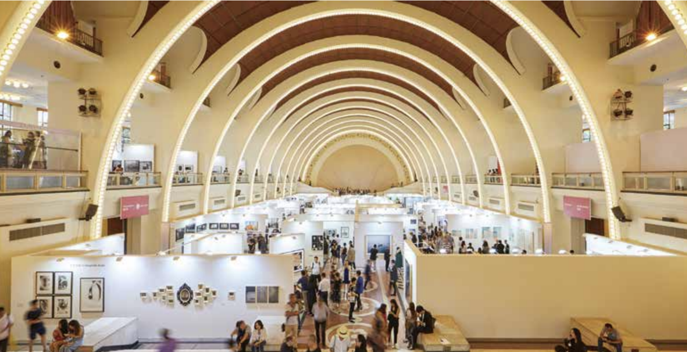

What shapes — and drives — the photography market?
是什么塑造和推进了摄影市场？
Public perception of photography, edition size, and an image’s relevance to contemporary discourse all shape price. The Art Newspaper China brings insiders’ perspectives from collectors and dealers.
Art艺术·Reported Feature报道型特写·Photography / Art Market摄影 / 艺术市场·20182018

In the photography market, value is often constructed through editions, validation, and where an image circulates.
在摄影市场里，“价值”常常由版数、背书机制与图像的流通路径共同建构。
Publication发表信息
Originally published in The Art Newspaper China, Issue 61 (Sep 2018).
Read the full piece (PDF) ↗
原文发表于《艺术新闻/中文版》2018 年 9 月第 61 期。
阅读全文（PDF）↗
Editor’s note
编辑说明
This piece traces how photography’s market value is made: not only through aesthetics, but through editions, validation mechanisms,
and the infrastructures of galleries, fairs, and collectors. It follows how “photography as record” gradually turned into
“photography as a tradable artwork,” and why Asia’s expanding market has accelerated that shift.
In November 2011, Andreas Gursky’s photograph Rhein II (1999) sold for USD 4.34 million at Christie’s New York, becoming the most expensive photograph ever sold. When collector Jin Hongwei encountered the same work again at Art Basel years later, its sixth edition was already priced at USD 5.5 million on the primary market—no longer inferior to paintings.
Historically, photography was priced far lower than other artistic media, largely due to its early modes of production. Many photographs could be printed indefinitely, often without clear dates or edition numbers. For collectors, this lack of scarcity significantly reduced value.
As photography matured as an art form, the market became increasingly regulated. Contemporary photographic works are now typically produced in limited editions—usually five to ten prints—with negatives retained by the artist and all editions produced simultaneously, ensuring scarcity.
Meanwhile, Western museums have developed mature systems for collecting photography. Leading institutions now place greater emphasis on photographic works, enhancing public recognition and reinforcing photography’s position within the contemporary art system.
What this demonstrates
它能证明什么
Situates photography’s rise within the contemporary art system—how institutions, fairs, and shared “legibility” turn images into collectible works.
Explains the market-specific levers of photography—editioning, print/production decisions, and author/estate control—and how they translate into price.
Observes how Asia’s expanding ecosystem and a new collector base reshape demand, and why “more affordable” can become photography’s entry point into collecting.